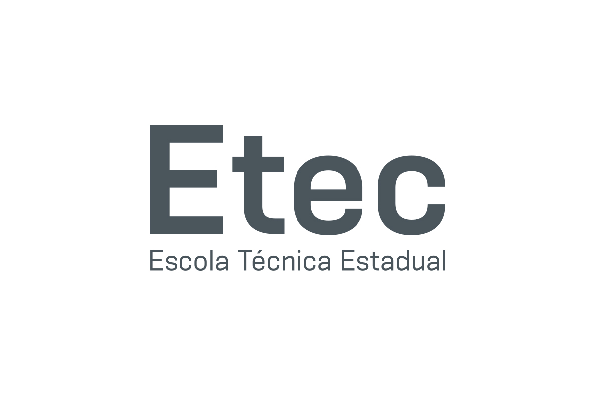
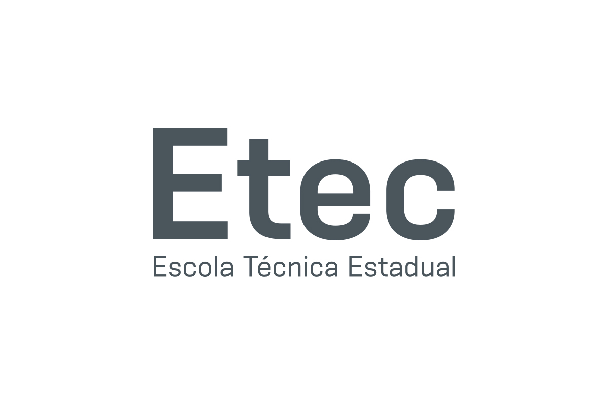

Identificação de linhas de problemas relacionadas aos temas
• Impactos da revolução tecnológica;
• Cidades inteligentes (smart cities);
• Inteligência artificial e Robótica;
• Metaverso;
• Internet das Coisas (IoT);
• Realidade aumentada e Realidade virtual;
• Eficiência energética.
Definição de escopo e delimitação de problema
• Atribuição de objetivos e metas em relação ao problema.
Elaboração de critérios de sucesso para resolução de problemas
• Atribuição de níveis de relevância dos objetivos;
• Verificação de nível de contribuição de propostas de projetos e soluções para os objetivos e metas.
Estrutura de ações e recursos para criação de modelo de resolução de problemas
• Seleção de ações e recursos necessários para o desenvolvimento do projeto.
Avaliação da relevância do projeto
• Teste e análise de protótipos e modelos;
• Análise das forças, fraquezas, oportunidades e ameaças do projeto.